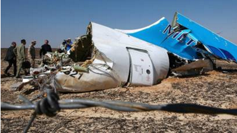

ZENT GROUP
QUẢNG CÁO
Nga nói khủng bố khiến phi cơ Nga bị đâm
Nga nói hành động khủng bố đã khiến chiếc phi cơ của Nga bị đâm ở Ai Cập hồi tháng 10 và giết hại tất cả 224 người trên máy bay.
17 tháng 11 năm 2015 | Thế giới
Phi cơ Nga: 'bom trong khoang hành lý
Nga nói chưa kết luận về vụ rơi máy bay
Máy bay hàng không Nga 'rơi vì bom'?


Bóng đá tuyển Anh thắng Pháp 2-0
Tuyển Anh thắng Pháp 2-0 trên sân Wembley nhờ công của Alli ở phút 39 và Rooney phút 47, trong trận cầu diễn ra chỉ vài ngày sau vụ khủng bố ở Paris
5 giờ trước | Thế giới
Anh Pháp giao hữu: Trận thách thức khủng bố

Tham nhũng, ma túy đông gấp bội 'đối lập'
Bộ trưởng Công an Trần Đại Quang cho biết trong hơn ba năm qua, Bộ này xác định có 350 đối tượng 'lập hội chống đối'
17 tháng 11 năm 2015 |Việt Nam
Luật Báo chí VN là 'vũ khí phe bảo thủ'?
Nhân sự và tư duy chính trị của Đảng
Charlie Sheen xác nhận nhiễm HIV
17 tháng 11 năm 2015 | Thế giới
Bắt nghi can vụ giết bà Hà Linh
17 tháng 11 năm 2015 | Việt Nam
Úc nhận 5 người tỵ nạn Syria đầu tiên
17 tháng 11 năm 2015 | Thế giới
Tổng thống Pháp thề phá tan IS
17 tháng 11 năm 2015 | Thế giới
Sam Rainsy hoãn ngày về nước
17 tháng 11 năm 2015 | Thế giới
Nhiều bang Mỹ ngưng nhận tỵ nạn Syria
17 tháng 11 năm 2015 | Thế giới
Cựu cán bộ an ninh bị tù vì Facebook
17 tháng 11 năm 2015 | Việt Nam
Anh-Pháp: 'Không phải là trận đấu thông thường
17 tháng 11 năm 2015 | Thể thao
Vietcombank ngưng dịch vụ ATM cho ngoại kiều
16 tháng 11 năm 2015 | Kinh tế
Nghe/Xem
Đại biểu Nghĩa hỏi Thủ tướng 'quá khó'
17 tháng 11 năm 2015 | Multimedia
Tưởng niệm các nạn nhân Paris tại Hà Nội
16 tháng 11 năm 2015 | Multimedia
Cảnh sát giải cứu con tin ở Paris
14 tháng 11 năm 2015 | Multimedia
Thủ tướng sẽ không đi ra ngoài đường lối
17 tháng 11 năm 2015 | Multimedia
'Xả súng' ở rạp hát Bataclan, Paris
16 tháng 11 năm 2015 | Multimedia

Paris sau các vụ tấn công tối 13/11/2015
14 tháng 11 năm 2015 | Thế giới
Điểm nhấn
IS là gì và nguy hiểm tới đâu?
BBC Tiếng Việt điểm lại các quan điểm đánh giá ý thức hệ, thực lực quân sự của Nhà nước Hồi giáo.
16 tháng 11 năm 2015 | Thế giới
Quan điểm

Nhiều người Hồi giáo 'đã khóc' trước Bataclan
Nhà báo tự do Phạm Cao Phong nói nhiều người Hồi giáo đã thực sự khóc và hát La Marseillaise ở nơi xảy ra khủng bố Paris.
15 tháng 11 năm 2015
Kinh tế
Cổ phiếu du lịch giảm vì tấn công Paris
Cổ phiếu của các hãng hàng không du lịch của Châu Âu bị giảm mạnh vào thứ Hai vì nhà đầu tư lo lắng về ảnh hưởng của các cuộc tấn công ở Paris.
17 tháng 11 năm 2015
Thể thao
Anh Pháp giao hữu: Trận thách thức khủng bố
Tuyển Pháp sẽ đến Anh với một thông điệp của sự đề kháng sau vụ tấn công đãm máu.
17 tháng 11 năm 2015
Xã hội

Dấu ấn Mao: Từ Hồng vệ binh tới ông Tập
Bộ đồ đặc trưng thời Cách mạng Văn hóa được kẻ xấu trong phim phương Tây ưa dùng, và cũng là lựa chọn ưa thích của Chủ tịch TQ.
13 tháng 11 năm 2015
Học tiếng Anh
Máy bay Nga bị rớt tại Sinai, Ai Cập
Viên chức hàng không Nga loại bỏ lỗi kỹ thuật hya lỗi phi công trong vụ rớt máy bay tại Sinai, Ai Cập.
13 tháng 11 năm 2015
Góc nhìn và chuyên mục
Bí ẩn những chuyến tàu ma ở Anh
Đài Loan, Tây Tạng và những quốc gia không tồn tại
Nghi phạm chính vụ Paris: Abdelhamid Abaaoud
Việt Nam: 'Người tham nhũng xử lý người chống
Nhà nước Hồi giáo thay đổi chiến thuật
K-9 là gì và Việt Tân ứng xử ra sao?
Dùng vũ lực sẽ gặp cách mạng từ dưới lên?
Luật Báo chí VN là 'vũ khí phe bảo thủ
'Côn đồ đánh chứ không phải công an'
Một chút quyền lợi có lung lạc được bạn?
Đọc nhiều nhất
Việt Nam: 'Người tham nhũng xử lý người chống'
1
Tham nhũng, ma túy đông gấp bội 'đối lập'
2
Cựu cán bộ an ninh bị tù vì Facebook
3
Bắt nghi can vụ giết bà Hà Linh
4
Thủ tướng và cái giá của sự 'ngạo mạn'
5
Nga nói khủng bố khiến phi cơ bị đâm
6
IS là gì và nguy hiểm tới đâu?
7
Charlie Sheen xác nhận nhiễm HIV
8
Bí ẩn những chuyến tàu ma ở Anh
9
Bóng đá: Tuyển Anh thắng Pháp 2-0
10
Mô hình trang BBC
News
| Sport
| Weather
| Radio
- Điều khoản sử dụng
- Vẽ BBC
- Chính sách riên tư
- Cookies
- Accessibility Help
- Parental Guidance
- Liên hệ BBC
Copyright© 2015 BBC. BBC không chịu trách nhiệm về nội dung trên các trang bên ngoài. Đọc thêm.